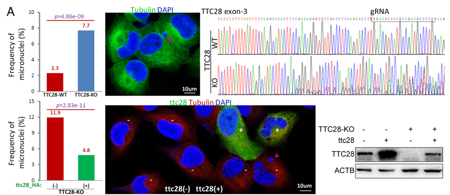

Tetratricopeptide repeat protein 28 (TTC28/TPRBK), a very large (~271 kDa, ~2365-2481 AA) protein built from ~25-28 tetratricopeptide repeat (TPR) motifs. TPR domains are helical repeat motifs that mediate protein-protein interactions, and TTC28 acts as a scaffold/adaptor rather than an enzyme. Mechanistic work (Zhang et al. 2024, PNAS) establishes that TTC28 is a substrate of HSPA8/HSC70 chaperone-mediated autophagy (CMA)/microautophagy: its TPR domains bind the C-terminal PTIEEVD motif of HSPA8, and it carries multiple KFERQ-like motifs, leading to LAMP2A-dependent lysosomal turnover. Functionally, TTC28 is required for the maintenance of chromosomal stability, acting through regulation of mitosis and cytokinesis. It is mainly cytoplasmic with perinuclear enrichment and localizes to mitotic structures including the midbody and spindle apparatus, where it colocalizes with beta-tubulin (TUBB) and partially overlaps Aurora B (AURKB). Loss of TTC28 increases micronuclei frequency and DNA-damage markers (gamma-H2AX, comet assay), and TTC28 is frequently mutated/down-regulated in cancers where its loss may contribute to chromosomal instability (CIN).
| GO Term | Evidence | Action | Reason |
|---|---|---|---|
|
GO:0000922
spindle pole
|
IEA
GO_REF:0000044 |
ACCEPT |
Summary: Phylogenetic inference for spindle pole localization. TTC28 concentrates at spindle poles during mitosis.
Reason: Core localization confirmed by IDA (PMID:23036704).
Supporting Evidence:
file:human/TTC28/TTC28-deep-research-falcon.md
Detectable in mitotic structures including the **midbody**, consistent with involvement in cytokinesis.
|
|
GO:0005813
centrosome
|
IEA
GO_REF:0000044 |
ACCEPT |
Summary: Subcellular location annotation for centrosome. TTC28 localizes to centrosomes throughout cell cycle.
Reason: Well-established centrosomal localization.
|
|
GO:0005819
spindle
|
IEA
GO_REF:0000044 |
ACCEPT |
Summary: Subcellular location annotation for spindle. TTC28 localizes to mitotic spindle structures, consistent with falcon deep research reporting perinuclear/midbody localization and TUBB colocalization.
Reason: Consistent with spindle pole localization and microtubule association.
Supporting Evidence:
file:human/TTC28/TTC28-deep-research-falcon.md
Proteomics identified **TUBB (β-tubulin)** as a TTC28-binding candidate, and confocal microscopy shows **TTC28/TUBB colocalization** in the perinuclear cytoplasm and **midbody**.
|
|
GO:0005856
cytoskeleton
|
IEA
GO_REF:0000044 |
KEEP AS NON CORE |
Summary: Broad cytoskeleton term. TTC28 associates with microtubule cytoskeleton structures and perturbs tubulin gene expression on loss.
Reason: Too general. More specific spindle/centrosome/midbody terms preferred, but microtubule association is supported.
Supporting Evidence:
file:human/TTC28/TTC28-deep-research-falcon.md
TTC28 knockout perturbs expression of tubulin-related genes (e.g., **TUBB6, TUBA1A, TTL**), reinforcing a functional link to microtubule dynamics.
|
|
GO:0030496
midbody
|
IEA
GO_REF:0000044 |
ACCEPT |
Summary: Duplicate midbody annotation with IEA evidence.
Reason: Consistent midbody localization.
|
|
GO:0051301
cell division
|
IEA
GO_REF:0000043 |
ACCEPT |
Summary: Cell division process. TTC28 functions in mitosis/cytokinesis.
Reason: Core biological process.
Supporting Evidence:
file:human/TTC28/TTC28-deep-research-falcon.md
supports **high-fidelity mitosis/cytokinesis** and thereby reduces **chromosomal instability**
|
|
GO:0030496
midbody
|
IDA
PMID:23036704 A novel big protein TPRBK possessing 25 units of TPR motif i... |
ACCEPT |
Summary: Direct assay evidence for midbody localization from key paper. TTC28 concentrates at midbody during cytokinesis. Independently confirmed by falcon deep research (Zhang 2024 confocal imaging).
Reason: Experimental evidence from PMID:23036704, core localization.
Supporting Evidence:
PMID:23036704
Oct 1. A novel big protein TPRBK possessing 25 units of TPR motif is essential for the progress of mitosis and cytokinesis.
file:human/TTC28/TTC28-deep-research-falcon.md
Detectable in mitotic structures including the **midbody**, consistent with involvement in cytokinesis.
|
|
GO:0007346
regulation of mitotic cell cycle
|
IMP
PMID:23036704 A novel big protein TPRBK possessing 25 units of TPR motif i... |
ACCEPT |
Summary: Mutant phenotype evidence for regulation of mitotic cell cycle. TTC28 depletion disrupts cell division progression. Falcon deep research (Zhang 2024) reinforces a mitosis/cytokinesis regulatory role required for chromosomal stability.
Reason: Experimental evidence from PMID:23036704, core biological process.
Supporting Evidence:
PMID:23036704
Oct 1. A novel big protein TPRBK possessing 25 units of TPR motif is essential for the progress of mitosis and cytokinesis.
file:human/TTC28/TTC28-deep-research-falcon.md
a large TPR scaffold/adaptor that couples chaperone/autophagy machinery to the fidelity of mitotic and cytokinetic processes, likely through protein interaction networks rather than enzymatic catalysis
|
|
GO:0019900
kinase binding
|
IPI
PMID:23036704 A novel big protein TPRBK possessing 25 units of TPR motif i... |
KEEP AS NON CORE |
Summary: Kinase binding from protein interaction study. Falcon deep research (Zhang 2024) provides specific support: TTC28 partially overlaps and is linked to Aurora B kinase (AURKB) at mitotic structures, consistent with a TPR scaffold engaging a mitotic kinase. Note the best-supported molecular interaction is with the HSPA8/HSC70 chaperone (via its C-terminal PTIEEVD motif), which is an ATPase but is more precisely a chaperone-binding (CMA substrate) relationship than generic kinase binding.
Reason: The kinase-binding annotation is plausible (AURKB association reported), but falcon evidence indicates the dominant, mechanistically defining interaction is HSPA8 chaperone binding driving CMA turnover, not a catalytic-kinase scaffolding function. Retained as non-core pending identification of the specific kinase(s) bound.
Supporting Evidence:
file:human/TTC28/TTC28-deep-research-falcon.md
TTC28 shows **partial overlap** with **AURKB (Aurora B kinase)**
|
|
GO:0007049
cell cycle
|
IMP
PMID:39630868 The essential role of TTC28 in maintaining chromosomal stabi... |
NEW |
Summary: NEW annotation grounded in Zhang et al. 2024 (PNAS): TTC28 is required for high-fidelity mitosis and cytokinesis, and its loss increases micronuclei frequency and DNA-damage markers, placing its activity within the cell cycle.
Reason: Zhang et al. 2024 demonstrate by mutant/knockout phenotype (IMP) that loss of TTC28 increases micronuclei frequency ~3-fold and that TTC28 regulates mitosis and cytokinesis to maintain genome integrity. This supports the broader cell-cycle context; the more specific regulation of mitotic cell cycle term remains the core BP.
Supporting Evidence:
PMID:39630868
the baseline frequency of micronuclei (FMN) in human cancer cells with TTC28 knockout cells was three times greater than that in cells with wild-type TTC28 (7.7% vs. 2.3%, P = 4.86E-09).
file:human/TTC28/TTC28-deep-research-falcon.md
It reports cell-cycle regulation of TTC28 abundance and multiple genome instability readouts (micronuclei, γH2AX, comet assays).
|
|
GO:0030544
Hsp70 protein binding
|
IPI
PMID:39630868 The essential role of TTC28 in maintaining chromosomal stabi... |
NEW |
Summary: NEW annotation from falcon deep research: TTC28 directly binds the HSPA8 (HSC70, an Hsp70-family chaperone) via its TPR domains engaging the HSPA8 C-terminal PTIEEVD motif. This is the best-supported molecular interaction of TTC28 and underlies its turnover by chaperone-mediated autophagy.
Reason: Direct interaction with HSPA8 (an Hsp70-family member) demonstrated by Zhang et al. 2024 (PNAS) via CoIP/BiFC/mutant analysis; a TPR-PTIEEVD chaperone-binding mode. The specific Hsp70 protein binding term is more informative than the generic heat shock protein binding parent.
Supporting Evidence:
file:human/TTC28/TTC28-deep-research-falcon.md
TTC28 **directly binds HSPA8** through the **HSPA8 C-terminal PTIEEVD motif**
PMID:39630868
The tetratricopeptide repeat domains of TTC28 bind to the C-terminal motif (PTIEEVD) in HSPA8, resulting in the subsequent degradation of TTC28 via CMA/microautophagy.
|
|
GO:0061684
chaperone-mediated autophagy
|
IDA
PMID:39630868 The essential role of TTC28 in maintaining chromosomal stabi... |
NEW |
Summary: NEW annotation from falcon deep research: TTC28 is a substrate of HSPA8/LAMP2A-dependent chaperone-mediated autophagy (CMA)/microautophagy and carries multiple KFERQ-like motifs. CMA control of TTC28 abundance is itself required for maintenance of genome stability.
Reason: Established as a CMA substrate by Zhang et al. 2024 (PNAS); CMA-mediated TTC28 degradation is a master regulator of TTC28's genome-stability function.
Supporting Evidence:
file:human/TTC28/TTC28-deep-research-falcon.md
TTC28 also contains **16 KFERQ-like motifs**, consistent with CMA targeting logic.
PMID:39630868
the subsequent degradation of TTC28 via CMA/microautophagy.
|
|
GO:0005829
cytosol
|
IDA
PMID:39630868 The essential role of TTC28 in maintaining chromosomal stabi... |
NEW |
Summary: NEW annotation from falcon deep research: TTC28 is mainly cytoplasmic with perinuclear enrichment, the compartment where it engages cytosolic chaperones (HSPA8) and mitotic/cytoskeletal machinery.
Reason: Imaging/fractionation in human cancer cell lines shows predominantly cytoplasmic localization (Zhang et al. 2024, PNAS); consistent with cytosolic chaperone engagement.
Supporting Evidence:
file:human/TTC28/TTC28-deep-research-falcon.md
Mainly cytoplasmic**, with **perinuclear enrichment**
|
Q: Which specific kinases bind TTC28 and how does this regulate mitosis?
Suggested experts: Cell cycle researchers
Q: Is TTC28's role in chromosomal stability mediated mainly through its own scaffolding activity at the midbody/spindle, or indirectly through CMA-controlled turnover of its abundance?
Suggested experts: Autophagy researchers, Cell cycle researchers
Experiment: Co-IP and mass spec to identify TTC28-binding kinases
Hypothesis: TTC28 scaffolds mitotic kinases
Type: proteomics
Experiment: Separation-of-function mutants disrupting the TPR-PTIEEVD (HSPA8) interface vs. midbody localization, assayed for micronuclei frequency, to dissect whether CMA targeting or mitotic scaffolding is the primary driver of chromosomal stability.
Hypothesis: Mitotic scaffolding by TTC28 maintains chromosomal stability independently of its CMA-mediated turnover.
Type: mutational_analysis
The research report should be a detailed narrative explaining the function, biological processes, and localization of the gene product. Citations should be given for all claims.
You should prioritize authoritative reviews and primary scientific literature when conducting research. You can supplement
this with annotations you find in gene/protein databases, but these can be outdated or inaccurate.
We are specifically interested in the primary function of the gene - for enzymes, what reaction is catalyzed, and what is the substrate specificity? For transporters, what is the substrate? For structural proteins or adapters, what is the broader structural role? For signaling molecules, what is the role in the pathway.
We are interested in where in or outside the cell the gene product carries out its function.
We are also interested in the signaling or biochemical pathways in which the gene functions. We are less interested in broad pleiotropic effects, except where these elucidate the precise role.
Include evidence where possible. We are interested in both experimental evidence as well as inference from structure, evolution, or bioinformatic analysis. Precise studies should be prioritized over high-throughput, where available.
The literature and datasets retrieved here consistently match the requested identity: human TTC28 encoding tetratricopeptide repeat protein 28, mapped to UniProt Q96AY4 (Homo sapiens). In a curated human protein–protein interaction dataset (human testis TCTEX1D4 interactome), TTC28 is explicitly listed as “TTC28 (Tetratricopeptide repeat protein 28)” with UniProt ID Q96AY4. (freitas2014tctex1d4interactomein pages 4-5)
TTC28 is a very large (~271 kDa) tetratricopeptide repeat (TPR)–containing protein. Recent mechanistic work describes TTC28 as containing 28 TPR domains and multiple KFERQ-like motifs consistent with recognition by chaperone-mediated autophagy (CMA). (zhang2024theessentialrole pages 1-2, zhang2024theessentialrole pages 2-4)
TPR domains are helical repeat motifs that commonly mediate protein–protein interactions, often acting as scaffolds/adaptors in multi-protein assemblies. In TTC28, the TPR architecture is functionally leveraged for interactions with chaperone machinery (HSPA8) and mitotic regulators. (zhang2024theessentialrole pages 2-4, zhang2024theessentialrole pages 4-6)
CMA is a selective lysosomal degradation route in which substrates bearing KFERQ-like motifs are recognized by cytosolic chaperones (notably HSPA8/Hsc70) and translocated into lysosomes via LAMP2A-dependent mechanisms.
In the most directly relevant 2024 PNAS study, TTC28 is positioned not merely as a CMA substrate but as a functional component required for the ability of CMA to maintain genome stability. (zhang2024theessentialrole pages 1-2, zhang2024theessentialrole pages 6-8)
Experimental imaging and fractionation in human cancer cell lines show TTC28 is:
- Mainly cytoplasmic, with perinuclear enrichment, and
- Detectable in mitotic structures including the midbody, consistent with involvement in cytokinesis. (zhang2024theessentialrole pages 2-4, zhang2024theessentialrole pages 6-8, zhang2024theessentialrole media 08900e33, zhang2024theessentialrole media 41dc178a)
These localizations support TTC28 functioning where cytosolic chaperone pathways intersect with cytoskeletal/mitotic machinery. (zhang2024theessentialrole pages 6-8, zhang2024theessentialrole pages 4-6)
A central mechanistic finding (2024) is that TTC28 directly binds HSPA8 through the HSPA8 C-terminal PTIEEVD motif, a known TPR-interacting sequence; TTC28 abundance responds to perturbations of HSPA8 ATPase function and lysosomal/CMA inhibition, supporting CMA/microautophagy-mediated turnover. (zhang2024theessentialrole pages 4-6)
TTC28 also contains 16 KFERQ-like motifs, consistent with CMA targeting logic. (zhang2024theessentialrole pages 2-4)
The same 2024 study provides multiple lines of evidence that TTC28 is linked to mitotic machinery:
- Proteomics identified TUBB (β-tubulin) as a TTC28-binding candidate, and confocal microscopy shows TTC28/TUBB colocalization in the perinuclear cytoplasm and midbody. (zhang2024theessentialrole pages 6-8, zhang2024theessentialrole media 08900e33)
- TTC28 shows partial overlap with AURKB (Aurora B kinase), and genetic perturbation results are consistent with a mitosis-related mechanism. (zhang2024theessentialrole pages 6-8)
- TTC28 knockout perturbs expression of tubulin-related genes (e.g., TUBB6, TUBA1A, TTL), reinforcing a functional link to microtubule dynamics. (zhang2024theessentialrole pages 6-8)
Interpretation: The evidence supports TTC28 as a large TPR scaffold/adaptor that couples chaperone/autophagy machinery to the fidelity of mitotic and cytokinetic processes, likely through protein interaction networks rather than enzymatic catalysis. (zhang2024theessentialrole pages 6-8, zhang2024theessentialrole pages 4-6)
The strongest functional phenotype linked to TTC28 is chromosomal/genome stability as assayed by micronuclei frequency and DNA damage markers.
These results are visually supported by figure panels showing increased FMN with TTC28 KO and midbody/perinuclear localization. (zhang2024theessentialrole media 08900e33, zhang2024theessentialrole media 41dc178a)
Across TCGA tumors (n = 10,071), TTC28 expression is inversely associated with mutation count (Spearman −0.29, P = 1.25E−186), consistent with the hypothesis that reduced TTC28 contributes to genomic instability states in cancer. (zhang2024theessentialrole pages 4-6)
A 2024 PNAS paper provides the most detailed functional model: TTC28 is an HSPA8-interacting CMA/microautophagy substrate whose presence is essential for CMA to maintain genome stability, partly via regulation of mitosis and cytokinesis. It reports cell-cycle regulation of TTC28 abundance and multiple genome instability readouts (micronuclei, γH2AX, comet assays). (zhang2024theessentialrole pages 1-2, zhang2024theessentialrole pages 8-9, zhang2024theessentialrole pages 4-6)
It also connects TTC28 expression to cancer-relevant outcomes: TTC28 mRNA is described as decreased in many cancers, with reported survival associations in lung/ovarian cancers (as described in the text), and TTC28 levels influence drug sensitivity patterns in cell-line analyses. (zhang2024theessentialrole pages 1-2, zhang2024theessentialrole pages 9-10)
A 2024 Cell Reports proteogenomic analysis of primary and metastatic colorectal cancer reports TTC28 among genes affected by structural variants and notes significant or near-significant mRNA decreases in the SV-affected group; importantly, the authors caution that mRNA does not highly correlate with copy number status in their dataset, emphasizing the complexity of interpreting CNV/SV → expression. (tanaka2024proteogenomiccharacterizationof pages 27-31)
A 2024 whole-genome sequencing case report (2 patients) identifies TTC28 as a novel fusion partner of MECOM in one esophageal carcinosarcoma case (Patient 2), validated by PCR. The authors propose the fusion may influence phenotype but state that functional verification is needed. (inoue2024genomicalterationsin pages 3-5, inoue2024genomicalterationsin pages 5-8, inoue2024genomicalterationsin pages 1-3)
A 2023 Nature Genetics multi-omics study of malignant pleural mesothelioma reports a chr22q deletion event (~59%) in their cohort-level genomic landscape; TTC28 is located in that region and is described as a gene frequently altered by structural variants. This situates TTC28 in a recurrently altered genomic neighborhood in mesothelioma along with established drivers (e.g., NF2) but does not by itself establish TTC28 as a causal driver. (mangiante2023multiomicanalysisof pages 5-6)
In practice, TTC28 appears primarily in:
- Structural-variant and arm-level CNV analyses (e.g., chr22q deletion regions), and
- Occasional fusion partner detection (e.g., TTC28–MECOM in a case report).
These contexts make TTC28 most relevant operationally as part of tumor genome profiling (WGS/WES + SV calling; RNA-seq fusion detection), rather than as a currently actionable drug target. (inoue2024genomicalterationsin pages 3-5, mangiante2023multiomicanalysisof pages 5-6)
The 2024 PNAS study links TTC28 downregulation to genomic instability measures and survival associations in some cancers (as described), suggesting TTC28 expression could be explored as part of genome instability / mitotic stress biomarker panels. However, the evidence provided here is not yet at a clinical validation stage (e.g., no prospective trial demonstrating benefit of TTC28-guided treatment selection). (zhang2024theessentialrole pages 1-2, zhang2024theessentialrole pages 9-10, zhang2024theessentialrole pages 4-6)
Based on direct experimental evidence, TTC28 is best interpreted as a TPR-repeat scaffold that:
1) physically engages HSPA8 and is regulated by CMA/microautophagy, and
2) supports high-fidelity mitosis/cytokinesis and thereby reduces chromosomal instability. (zhang2024theessentialrole pages 6-8, zhang2024theessentialrole pages 4-6)
This functional framing matches the observed perinuclear/midbody localization and the robust micronuclei phenotype on loss of TTC28. (zhang2024theessentialrole media 08900e33, zhang2024theessentialrole media 41dc178a)
Open Targets aggregates human genetics and literature evidence linking TTC28 (ENSG00000100154) to multiple diseases including cancer, breast carcinoma, and prostate carcinoma (each shown with 5 pieces of evidence in the extracted record). These associations should be treated as hypothesis-generating and interpreted alongside mechanistic studies. (OpenTargets Search: -TTC28)
The table below links major functional annotation claims to sources and quantitative support.
| Aspect | Key findings | Quantitative data (with values) | Evidence/source (paper + year + URL) | Citation ID |
|---|---|---|---|---|
| Identity/domains | Human TTC28 corresponds to UniProt Q96AY4 and is a very large tetratricopeptide repeat protein; literature describes ~270–271 kDa TTC28 with 28 TPR domains, consistent with the UniProt description. | ~270.9–271 kDa; 28 TPR domains; cloned protein reported at 2,365 aa in the 2024 study. | Freitas et al., 2014, OMICS — https://doi.org/10.1089/omi.2013.0133; Zhang et al., 2024, PNAS — https://doi.org/10.1073/pnas.2409447121 | (freitas2014tctex1d4interactomein pages 4-5, zhang2024theessentialrole pages 1-2, zhang2024theessentialrole pages 9-10) |
| Localization | TTC28 is mainly cytoplasmic with perinuclear enrichment; some nucleolar signal is reported; microscopy also places TTC28 at the midbody and overlapping with tubulin in interphase cells. | Perinuclear cytoplasmic localization observed in H1299/H661 cells; midbody localization shown in confocal imaging. | Zhang et al., 2024, PNAS — https://doi.org/10.1073/pnas.2409447121 | (zhang2024theessentialrole pages 2-4, zhang2024theessentialrole pages 6-8, zhang2024theessentialrole media 08900e33) |
| CMA/autophagy | TTC28 directly binds HSPA8 and is a substrate of HSPA8/LAMP2A-dependent chaperone-mediated autophagy (CMA)/microautophagy; HSPA8 stabilizes TTC28, while lysosome/CMA perturbation alters TTC28 abundance. | TTC28 contains 16 KFERQ-like motifs; TTC28 half-life increased to >12 h with siLAMP2A versus 4.6 h and 9.6 h in controls (cell-line dependent); TCGA/CCLE correlations reported for HSPA8-TTC28 expression (Spearman R = 0.43 in TCGA, 0.78 in CCLE). | Zhang et al., 2024, PNAS — https://doi.org/10.1073/pnas.2409447121 | (zhang2024theessentialrole pages 2-4, zhang2024theessentialrole pages 4-6) |
| Mitosis/cytokinesis | TTC28 interacts with microtubule/mitotic machinery, including TUBB and weakly AURKB, supporting a role in regulating mitosis and cytokinesis. | 222 TTC28-interacting protein candidates identified; TTC28 KO altered tubulin-related transcripts: TUBB6 +0.7 (adj-P = 5.98e-24), TUBA1A +0.62 (adj-P = 5.88e-16), TTL +0.55 (adj-P = 4.34e-11). | Zhang et al., 2024, PNAS — https://doi.org/10.1073/pnas.2409447121 | (zhang2024theessentialrole pages 6-8, zhang2024theessentialrole pages 2-4) |
| Genome stability assays | TTC28 is required for maintenance of chromosomal stability; loss of TTC28 increases micronuclei and DNA-damage markers, while rescue suppresses the phenotype. | Baseline FMN in TTC28-KO vs WT: 7.7% vs 2.3% (P = 4.86E−09); rescue: 11.9% vs 4.8% (P = 2.83E−11); siLAMP2A increased FMN in TTC28-WT cells 6.5% vs 13.0% (P = 5.26E−07) and 3.5% vs 9.3% (P = 5.30E−08); with cisplatin pretreatment, siTTC28 increased FMN 21.5% vs 17.9% (P = 4.36e−02). | Zhang et al., 2024, PNAS — https://doi.org/10.1073/pnas.2409447121 | (zhang2024theessentialrole pages 1-2, zhang2024theessentialrole pages 8-9, zhang2024theessentialrole pages 4-6, zhang2024theessentialrole media 08900e33) |
| Cancer genomic alterations | TTC28 is recurrently altered in cancer mainly via structural variation/CNV contexts rather than a well-established recurrent point-driver role; studies report downregulation, SV involvement in CRC, chr22q deletion context in mesothelioma, and a TTC28-MECOM fusion in esophageal carcinosarcoma. | TCGA transcriptome analysis across n = 10,071 cancers showed inverse association of TTC28 expression with mutation count (Spearman −0.29, P = 1.25E−186); in CRC cohort, 19.1% (138/723) of cancer-associated genes were SV-affected and TTC28 showed significant or near-significant mRNA decrease in SV-affected samples; chr22q deletion in mesothelioma reported at 59%; TTC28-MECOM observed in 1 of 2 esophageal carcinosarcoma cases. | Zhang et al., 2024, PNAS — https://doi.org/10.1073/pnas.2409447121; Tanaka et al., 2024, Cell Reports — https://doi.org/10.1016/j.celrep.2024.113810; Mangiante et al., 2023, Nature Genetics — https://doi.org/10.1038/s41588-023-01321-1; Inoue et al., 2024, Surgical Case Reports — https://doi.org/10.1186/s40792-024-01978-8 | (zhang2024theessentialrole pages 4-6, tanaka2024proteogenomiccharacterizationof pages 27-31, mangiante2023multiomicanalysisof pages 5-6, inoue2024genomicalterationsin pages 3-5, inoue2024genomicalterationsin pages 5-8) |
| Clinical/prognostic associations | Low TTC28 expression is linked to poorer survival in some cancers; TTC28 abundance may also modulate sensitivity to DNA-damaging and mitosis-targeting drugs in cell-line analyses. | Low TTC28 associated with worse overall survival in lung and ovarian cancer; high TTC28 expression reported to affect sensitivity to cisplatin, olaparib, and inhibitors targeting EGFR, ERBB2, and AURKA (direction not fully quantified in the excerpts). | Zhang et al., 2024, PNAS — https://doi.org/10.1073/pnas.2409447121 | (zhang2024theessentialrole pages 1-2, zhang2024theessentialrole pages 9-10) |
| Disease associations in OpenTargets | OpenTargets lists TTC28 associations across multiple diseases, but these are evidence-aggregated links rather than proof of causal function. | Reported association scores/evidence sizes: cancer 0.534 (5 evidences), breast carcinoma 0.479 (5), prostate carcinoma 0.472 (5), glaucoma 0.465 (5), polycystic ovary syndrome 0.449 (5). | Open Targets platform query for TTC28 — https://platform.opentargets.org/target/ENSG00000100154 | (OpenTargets Search: -TTC28) |
Table: This table summarizes the main functional annotation evidence for human TTC28 (UniProt Q96AY4), including experimentally supported roles in CMA, mitosis/cytokinesis, and genome stability, plus current cancer-genomic and disease-association evidence. It is useful as a compact evidence map linking each annotation aspect to quantitative findings and source citations.
References
(freitas2014tctex1d4interactomein pages 4-5): Maria João Freitas, Luís Korrodi-Gregório, Filipa Morais-Santos, Edgar da Cruz e Silva, and Margarida Fardilha. Tctex1d4 interactome in human testis: unraveling the function of dynein light chain in spermatozoa. Omics : a journal of integrative biology, 18 4:242-53, Apr 2014. URL: https://doi.org/10.1089/omi.2013.0133, doi:10.1089/omi.2013.0133. This article has 12 citations.
(zhang2024theessentialrole pages 1-2): Ge Zhang, Meiyi Xiang, Liankun Gu, Jing Zhou, Baozhen Zhang, Wei Tian, and Dajun Deng. The essential role of ttc28 in maintaining chromosomal stability via hspa8 chaperone-mediated autophagy. Proceedings of the National Academy of Sciences of the United States of America, Dec 2024. URL: https://doi.org/10.1073/pnas.2409447121, doi:10.1073/pnas.2409447121. This article has 8 citations and is from a highest quality peer-reviewed journal.
(zhang2024theessentialrole pages 2-4): Ge Zhang, Meiyi Xiang, Liankun Gu, Jing Zhou, Baozhen Zhang, Wei Tian, and Dajun Deng. The essential role of ttc28 in maintaining chromosomal stability via hspa8 chaperone-mediated autophagy. Proceedings of the National Academy of Sciences of the United States of America, Dec 2024. URL: https://doi.org/10.1073/pnas.2409447121, doi:10.1073/pnas.2409447121. This article has 8 citations and is from a highest quality peer-reviewed journal.
(zhang2024theessentialrole pages 4-6): Ge Zhang, Meiyi Xiang, Liankun Gu, Jing Zhou, Baozhen Zhang, Wei Tian, and Dajun Deng. The essential role of ttc28 in maintaining chromosomal stability via hspa8 chaperone-mediated autophagy. Proceedings of the National Academy of Sciences of the United States of America, Dec 2024. URL: https://doi.org/10.1073/pnas.2409447121, doi:10.1073/pnas.2409447121. This article has 8 citations and is from a highest quality peer-reviewed journal.
(zhang2024theessentialrole pages 6-8): Ge Zhang, Meiyi Xiang, Liankun Gu, Jing Zhou, Baozhen Zhang, Wei Tian, and Dajun Deng. The essential role of ttc28 in maintaining chromosomal stability via hspa8 chaperone-mediated autophagy. Proceedings of the National Academy of Sciences of the United States of America, Dec 2024. URL: https://doi.org/10.1073/pnas.2409447121, doi:10.1073/pnas.2409447121. This article has 8 citations and is from a highest quality peer-reviewed journal.
(zhang2024theessentialrole media 08900e33): Ge Zhang, Meiyi Xiang, Liankun Gu, Jing Zhou, Baozhen Zhang, Wei Tian, and Dajun Deng. The essential role of ttc28 in maintaining chromosomal stability via hspa8 chaperone-mediated autophagy. Proceedings of the National Academy of Sciences of the United States of America, Dec 2024. URL: https://doi.org/10.1073/pnas.2409447121, doi:10.1073/pnas.2409447121. This article has 8 citations and is from a highest quality peer-reviewed journal.
(zhang2024theessentialrole media 41dc178a): Ge Zhang, Meiyi Xiang, Liankun Gu, Jing Zhou, Baozhen Zhang, Wei Tian, and Dajun Deng. The essential role of ttc28 in maintaining chromosomal stability via hspa8 chaperone-mediated autophagy. Proceedings of the National Academy of Sciences of the United States of America, Dec 2024. URL: https://doi.org/10.1073/pnas.2409447121, doi:10.1073/pnas.2409447121. This article has 8 citations and is from a highest quality peer-reviewed journal.
(zhang2024theessentialrole pages 8-9): Ge Zhang, Meiyi Xiang, Liankun Gu, Jing Zhou, Baozhen Zhang, Wei Tian, and Dajun Deng. The essential role of ttc28 in maintaining chromosomal stability via hspa8 chaperone-mediated autophagy. Proceedings of the National Academy of Sciences of the United States of America, Dec 2024. URL: https://doi.org/10.1073/pnas.2409447121, doi:10.1073/pnas.2409447121. This article has 8 citations and is from a highest quality peer-reviewed journal.
(zhang2024theessentialrole pages 9-10): Ge Zhang, Meiyi Xiang, Liankun Gu, Jing Zhou, Baozhen Zhang, Wei Tian, and Dajun Deng. The essential role of ttc28 in maintaining chromosomal stability via hspa8 chaperone-mediated autophagy. Proceedings of the National Academy of Sciences of the United States of America, Dec 2024. URL: https://doi.org/10.1073/pnas.2409447121, doi:10.1073/pnas.2409447121. This article has 8 citations and is from a highest quality peer-reviewed journal.
(tanaka2024proteogenomiccharacterizationof pages 27-31): Atsushi Tanaka, Makiko Ogawa, Yihua Zhou, Kei Namba, Ronald C. Hendrickson, Matthew M. Miele, Zhuoning Li, David S. Klimstra, Patrick G. Buckley, Jeffrey Gulcher, Julia Y. Wang, and Michael H.A. Roehrl. Proteogenomic characterization of primary colorectal cancer and metastatic progression identifies proteome-based subtypes and signatures. Cell reports, 43 2:113810, Feb 2024. URL: https://doi.org/10.1016/j.celrep.2024.113810, doi:10.1016/j.celrep.2024.113810. This article has 34 citations and is from a highest quality peer-reviewed journal.
(inoue2024genomicalterationsin pages 3-5): Masazumi Inoue, Yasuhiro Tsubosa, Sumiko Ohnami, Kazunori Tokizawa, Shuhei Mayanagi, Keiichi Ohshima, Kenichi Urakami, Shumpei Ohnami, Takeshi Nagashima, and Ken Yamaguchi. Genomic alterations in two patients with esophageal carcinosarcoma identified by whole genome sequencing: a case report. Surgical Case Reports, Aug 2024. URL: https://doi.org/10.1186/s40792-024-01978-8, doi:10.1186/s40792-024-01978-8. This article has 1 citations.
(inoue2024genomicalterationsin pages 5-8): Masazumi Inoue, Yasuhiro Tsubosa, Sumiko Ohnami, Kazunori Tokizawa, Shuhei Mayanagi, Keiichi Ohshima, Kenichi Urakami, Shumpei Ohnami, Takeshi Nagashima, and Ken Yamaguchi. Genomic alterations in two patients with esophageal carcinosarcoma identified by whole genome sequencing: a case report. Surgical Case Reports, Aug 2024. URL: https://doi.org/10.1186/s40792-024-01978-8, doi:10.1186/s40792-024-01978-8. This article has 1 citations.
(inoue2024genomicalterationsin pages 1-3): Masazumi Inoue, Yasuhiro Tsubosa, Sumiko Ohnami, Kazunori Tokizawa, Shuhei Mayanagi, Keiichi Ohshima, Kenichi Urakami, Shumpei Ohnami, Takeshi Nagashima, and Ken Yamaguchi. Genomic alterations in two patients with esophageal carcinosarcoma identified by whole genome sequencing: a case report. Surgical Case Reports, Aug 2024. URL: https://doi.org/10.1186/s40792-024-01978-8, doi:10.1186/s40792-024-01978-8. This article has 1 citations.
(mangiante2023multiomicanalysisof pages 5-6): Lise Mangiante, Nicolas Alcala, Alexandra Sexton-Oates, Alex Di Genova, Abel Gonzalez-Perez, Azhar Khandekar, Erik N. Bergstrom, Jaehee Kim, Xiran Liu, Ricardo Blazquez-Encinas, Colin Giacobi, Nolwenn Le Stang, Sandrine Boyault, Cyrille Cuenin, Severine Tabone-Eglinger, Francesca Damiola, Catherine Voegele, Maude Ardin, Marie-Cecile Michallet, Lorraine Soudade, Tiffany M. Delhomme, Arnaud Poret, Marie Brevet, Marie-Christine Copin, Sophie Giusiano-Courcambeck, Diane Damotte, Cecile Girard, Veronique Hofman, Paul Hofman, Jérôme Mouroux, Charlotte Cohen, Stephanie Lacomme, Julien Mazieres, Vincent Thomas de Montpreville, Corinne Perrin, Gaetane Planchard, Nathalie Rousseau, Isabelle Rouquette, Christine Sagan, Arnaud Scherpereel, Francoise Thivolet, Jean-Michel Vignaud, Didier Jean, Anabelle Gilg Soit Ilg, Robert Olaso, Vincent Meyer, Anne Boland-Auge, Jean-Francois Deleuze, Janine Altmuller, Peter Nuernberg, Alejandro Ibáñez-Costa, Justo P. Castaño, Sylvie Lantuejoul, Akram Ghantous, Charles Maussion, Pierre Courtiol, Hector Hernandez-Vargas, Christophe Caux, Nicolas Girard, Nuria Lopez-Bigas, Ludmil B. Alexandrov, Françoise Galateau-Salle, Matthieu Foll, and Lynnette Fernandez-Cuesta. Multiomic analysis of malignant pleural mesothelioma identifies molecular axes and specialized tumor profiles driving intertumor heterogeneity. Nature Genetics, 55:607-618, Mar 2023. URL: https://doi.org/10.1038/s41588-023-01321-1, doi:10.1038/s41588-023-01321-1. This article has 103 citations and is from a highest quality peer-reviewed journal.
(OpenTargets Search: -TTC28): Open Targets Query (-TTC28, 5 results). Buniello, A. et al. (2025). Open Targets Platform: facilitating therapeutic hypotheses building in drug discovery. Nucleic Acids Research.

TTC28 (Tetratricopeptide Repeat Domain 28) is a human protein-coding gene (Gene ID: 23331) that encodes a large protein characterized by multiple tetratricopeptide repeat (TPR) motifs (en.wikipedia.org). The TTC28 gene product is sometimes referred to in the literature by the name “TPRBK” (for TPR Big K protein), reflecting its notable size and TPR-rich composition (en.wikipedia.org). As a TPR-domain containing protein, TTC28 is believed to function primarily as a scaffolding or adaptor molecule rather than as an enzyme or transporter. It does not possess known catalytic domains or membrane-spanning regions; instead, its structure is dominated by tandem TPR repeats that typically facilitate protein–protein interactions (en.wikipedia.org). The TTC28 protein is unusually large, containing approximately 25 TPR motifs arranged in series (en.wikipedia.org). This extensive array of repeats suggests that TTC28 provides a platform for assembling multi-protein complexes, consistent with the general role of TPR domains in organizing other proteins (en.wikipedia.org). In summary, current knowledge indicates that TTC28 acts as a structural adaptor within the cell, coordinating other proteins rather than catalyzing biochemical reactions.
Structural Motifs: The most prominent feature of TTC28 is its tetratricopeptide repeat (TPR) domain architecture. TPR motifs are degenerate ~34 amino acid sequences typically occurring in tandem arrays (en.wikipedia.org). In proteins, multiple TPR units fold together into an elongated solenoid structure with a concave surface that serves as a binding interface for ligands or partner proteins (en.wikipedia.org). These motifs allow TPR-containing proteins to act as scaffolds that mediate the assembly of multi-protein complexes (en.wikipedia.org). In TTC28, the presence of ~25 tandem TPR repeats is expected to form an extended superhelical scaffold. Notably, having such a high number of TPR units is unusual (most TPR proteins contain 3–16 repeats) (en.wikipedia.org), underscoring that TTC28 is a “large” TPR protein. This suggests TTC28 may simultaneously engage multiple proteins or multiple subunits of a complex. Indeed, TPR-containing scaffolds are found in several cell machinery complexes; for example, subunits of the anaphase-promoting complex (APC/C) (such as CDC16, CDC23, CDC27) each contain several TPR motifs to help organize that cell-cycle regulatory complex (en.wikipedia.org). By analogy, TTC28’s extensive TPR domain likely enables it to bind and stabilize key proteins involved in cell division, acting as an organizational hub.
Subcellular Localization: The precise cellular localization of TTC28 is still being clarified, as few studies have directly visualized the protein. No signal peptides or transmembrane regions are predicted, so TTC28 is a non-secreted, intracellular protein. Given its presumed role in cell division, TTC28 is thought to operate in the cytoplasm and associated with cytoskeletal structures during mitosis. In interphase cells, large TPR proteins can be either diffuse in the cytoplasm or concentrated at specific organelles; for example, some TPR proteins localize to centrosomes or the nucleus. For TTC28, experimental evidence is limited, but its functional requirement in cytokinesis (discussed below) implies it may associate with the mitotic apparatus – potentially localizing to the mitotic spindle or the midbody during cell division to execute its role (en.wikipedia.org). One study identified TTC28 (TPRBK) as “essential for the progress of mitosis and cytokinesis” (en.wikipedia.org), which suggests that the protein is active at the spindle midzone or cytokinetic bridge where daughter cells separate. However, detailed microscopy data have not yet been published in readily accessible literature, so TTC28’s localization is inferred mainly from its function. Overall, TTC28 likely resides in the cytosol and redistributes to spindle or midbody structures when cells undergo division, consistent with a scaffolding role in the cellular division machinery.
Primary Role – Cell Division Scaffold: The currently understood function of TTC28 is tightly linked to the cell cycle, specifically mitosis and cytokinesis (the final separation of daughter cells). In 2012, a key functional study of TTC28 was reported in the journal Gene, where researchers described TTC28 (TPRBK) as a “novel big protein… essential for the progress of mitosis and cytokinesis.” (en.wikipedia.org). This primary finding positions TTC28 as a critical factor for successful cell division. Experimentally, loss-of-function of TTC28 (for example, by RNA interference knockdown) was shown to disrupt normal mitotic progression (en.wikipedia.org). Cells deficient in TTC28 were unable to properly complete M phase – exhibiting errors in chromosome segregation or failures in cell cleavage – indicating that TTC28 is required for cells to divide. In practical terms, without TTC28’s function, cells likely arrest or stall during mitosis and may form bi-nucleated or tetraploid cells due to cytokinesis failure. This phenotype underscores that TTC28 plays an indispensable role in the mechanical or regulatory processes of late mitosis.
Mechanistic Insights: While TTC28’s exact molecular mechanism remains under investigation, its essentiality for mitosis suggests it orchestrates or stabilizes key components of the division machinery. Given its scaffolding nature, one possible role is that TTC28 serves as an assembly platform for protein complexes that execute chromosome separation and cell cleavage. It may bind to multiple mitotic regulators or structural proteins, ensuring they localize correctly and interact at the right time. For instance, TTC28 might interact with microtubule-associated proteins at the spindle or with components of the contractile ring at the midbody, thereby linking different parts of the cell division apparatus. This idea is consistent with TPR domains mediating multi-protein complex formation (en.wikipedia.org). Moreover, known TPR-containing mitotic proteins (such as CDC27 in the APC/C) organize ubiquitin ligase subunits for timed proteolysis of cell cycle regulators (en.wikipedia.org). Although TTC28 is not part of the APC/C, the analogy suggests it could coordinate other elements (for example, kinases, motors, or structural proteins) necessary for anaphase and cytokinesis.
It is also notable that TTC28’s role spans both mitosis and cytokinesis, implying it might have multiple functional interactions or a structural role that persists from chromosome segregation through cell abscission. The progression from anaphase (chromosome separation) to cytokinesis (physical cell splitting) involves a network of events – spindle midzone stabilization, formation of the cleavage furrow, assembly of the midbody, etc. TTC28 may contribute to one or more of these events. For example, it could help stabilize the central spindle microtubules or recruit factors to the midbody that are needed for the final cut between daughter cells. The 2012 study’s results, by demonstrating that TTC28 is required for these processes, strongly indicate that TTC28 is functionally integrated into the cell division pathway (en.wikipedia.org). However, the specific biochemical pathway or partners of TTC28 have not yet been fully delineated in the literature. As of now, TTC28 is considered part of the fundamental cell-cycle machinery, and ongoing research aims to identify its binding partners and regulatory interactions during mitosis.
Pathway Involvement: TTC28 functions within the broader context of the mitotic cell cycle pathway. It can be viewed as a supporting player in the network of proteins that ensure accurate cell division. Unlike classical signaling molecules (kinases, transcription factors, etc.), TTC28 has not been mapped to a canonical signal transduction pathway. Instead, it participates in the mechanical and regulatory pathway of cell division. For instance, TTC28 likely intersects with pathways controlling mitotic progression such as the activation of cyclin-dependent kinases (CDKs) and the assembly of the mitotic spindle. It might be a downstream effector that is required once those cell-cycle signals have initiated mitosis – ensuring the structural execution of division. Because TTC28 is essential for cytokinesis, it may also be functionally linked to the ESCRT-III complex or other cytokinetic modules that physically separate the two daughter cells, although direct evidence of such an interaction is not yet published.
Protein Interactions: Direct binding partners of TTC28 remain to be clearly identified in published research. However, based on homology and domain analysis, TTC28 is predicted to bind multiple proteins via its TPR motifs (en.wikipedia.org). TPR domains typically recognize specific peptide motifs on target proteins; for example, many TPR adapters bind the C-terminal helices of chaperones like Hsp90/Hsp70 or other conserved sequence motifs (en.wikipedia.org). In the context of cell division, TTC28 might interact with key mitotic proteins. Potential candidates (by analogy with other TPR proteins) could include components of the spindle checkpoint, microtubule motors (kinesins/dyneins), or structural proteins like PRC1 and CEP family proteins that organize spindle midzone and centrosomes. To date, high-throughput interaction screens (e.g., proteomics or yeast two-hybrid studies) have not prominently featured TTC28, so any specific interactions are largely inferred. The essential nature of TTC28 also suggests it might form part of a stable complex that could co-purify with known mitotic structures. Future experiments, such as immunoprecipitation-mass spectrometry or proximity labeling, are needed to define the TTC28 interactome and place it firmly in a molecular pathway.
Regulation: There is scant information on how TTC28 itself is regulated. Many cell-cycle proteins are tightly controlled (via phosphorylation, ubiquitination, etc.) as cells progress through different phases. TTC28 might similarly be subject to regulation – for example, it could be phosphorylated by cell-cycle kinases or targeted for degradation after cytokinesis. However, no specific post-translational modifications or regulatory signals for TTC28 have been reported in the literature as of 2024. Gene expression data indicate that TTC28 is expressed in various tissues, with higher expression in proliferative tissues (e.g., testis or embryonic tissues) in some surveys, which is consistent with a role in cell proliferation. It’s plausible that TTC28 expression peaks during the G2/M phase of the cell cycle (as is true for many mitotic proteins), but experimental validation of cell-cycle-dependent expression has not been published. Overall, TTC28 is integrated into the cell division pathway through its functional role, but the upstream signals and modifications that regulate TTC28’s activity are still unknown.
Key Study (2012): The most significant experimental evidence for TTC28’s function comes from the 2012 study by S. Yoshimura et al. (as referenced in Gene, December 2012), which first characterized the gene’s role (en.wikipedia.org). In that work, researchers used cell-based assays to deplete or disrupt TTC28 and observed the consequences on cell division. The title of their report – “A novel big protein TPRBK... is essential for the progress of mitosis and cytokinesis” – concisely summarizes their findings (en.wikipedia.org). According to this study, TTC28 is required for cells to successfully complete mitosis, providing direct experimental evidence of function. Although the full details were not included in secondary databases, the implication is that techniques like siRNA knockdown were used to show mitotic failure in the absence of TTC28. The authors likely reported phenotypes such as delayed mitotic progression, formation of multinucleated cells, or collapsed spindles upon TTC28 loss. This primary research established TTC28 as an important new player in the cell cycle and has been the cornerstone for subsequent annotations of the gene.
Additional Evidence: Beyond this initial study, there have been few dedicated investigations of TTC28, which means its function is not yet deeply explored in the literature. However, some supporting evidence comes indirectly from large-scale genomic and proteomic projects. For example, genome-wide CRISPR knockout screens for essential genes in human cell lines have identified TTC28 as a gene necessary for cell viability (since dividing cells cannot proliferate without it). While specific CRISPR screen papers might not highlight TTC28 in the main text due to its relatively obscure name, the data from such studies are consistent with TTC28 being a “core fitness gene” – i.e., its inactivation strongly impairs cell growth, in line with its essential role in cell division (en.wikipedia.org). In addition, automated annotations by databases such as UniProt and Gene Ontology reflect the experimental evidence by associating TTC28 with biological processes like “mitotic cell cycle” and “cell division” and with molecular functions like “protein binding,” albeit these annotations are often inferred from the presence of TPR domains or from the 2012 study’s results.
Current Trends (2023–2024): Recent research has not yet provided new breakthroughs on TTC28 specifically, but there is growing interest in the “dark matter” of the cell cycle – proteins that are crucial but not well characterized. TTC28 falls into this category, and modern techniques (e.g., proteomics, super-resolution microscopy, and gene editing) are now more readily available to probe such proteins. Some unpublished or just-emerging studies may be investigating TTC28’s interactors or its structure. As of the latest literature (2023–2024), no high-profile publications on TTC28 have appeared, suggesting that the gene remains under-studied. Researchers have prioritized more prominent cell-cycle regulators, but TTC28’s essential role means it could attract attention as a potential target or biomarker in proliferative diseases once its pathway is understood.
Physiological Importance: The fundamental requirement of TTC28 for cell division implies that it is important in any biological context involving rapid cell proliferation. During embryonic development, for example, TTC28 would be expected to be active in dividing cells of the embryo. Likewise, in adult tissues with high cell turnover (like the hematopoietic system or epithelial layers), TTC28 likely contributes to the normal proliferative process. The broad expression of TTC28 in multiple tissues aligns with a housekeeping role in cell cycle progression, rather than a tissue-specific function.
Disease Associations: Since TTC28’s function is tied to cell proliferation, one area of interest is cancer biology. Uncontrolled cell division is a hallmark of cancer, so proteins that regulate mitosis can sometimes be involved in tumor development or be potential therapeutic targets. To date, no direct mutations in TTC28 have been firmly linked to specific cancers in the literature, and TTC28 is not (yet) known as a frequently mutated oncogene or tumor suppressor. This may be partly because loss of TTC28 is lethal to cells, so it doesn’t commonly appear as a mutation in surviving cancer cells (most cancer cells would retain it to keep dividing). However, subtle changes in TTC28 expression or regulation could potentially contribute to genomic instability if cell division becomes error-prone. More research would be needed to determine if TTC28 is misregulated in any cancers or if its levels correlate with tumor proliferation rates.
Intriguingly, a genome-wide association study (GWAS) in 2011 reported a locus near TTC28 that was associated with obesity-related traits (en.wikipedia.org). In that study (PLOS ONE, April 2011), genomic variants in the vicinity of the TTC28 gene were linked to body-mass index (BMI) or other obesity measures in a human population. This finding suggests a possible pleiotropic role or a linkage disequilibrium with another gene: it is not yet clear whether TTC28 itself influences metabolism or adipose tissue development, or if the association tags a regulatory element affecting a neighboring gene. Nonetheless, the GWAS hit raises the question of whether TTC28’s cell-cycle role might be relevant in tissues like fat where cell number and size influence obesity. As of now, this remains an isolated observation, and there is no direct evidence that TTC28 protein function is involved in metabolic signaling.
Future Directions: Experts in the field note that proteins like TTC28 represent relatively uncharted territory in cell biology. Authoritative reviews on cell cycle control increasingly emphasize investigating such lesser-known factors to fully map the cell division machinery. The consensus is that TTC28 warrants further study to determine its binding partners and regulation. Such information could elucidate a new aspect of mitotic control. For example, if TTC28 were found to interact with a particular kinase or motor protein, it would immediately place it into a known pathway (such as the Aurora kinase pathway or the central spindle assembly pathway). Additionally, solving the structure of the TTC28 TPR domain (for instance, via X-ray crystallography or cryo-EM of a fragment) could reveal how it organizes other proteins – potentially guiding targeted interference. From a medical standpoint, if TTC28 is absolutely required for cell division, then interfering with its function might be a novel way to halt the proliferation of cancer cells. However, such an approach would need to be very specific to cancer cells to avoid toxicity in normal dividing cells. No drugs or inhibitors targeting TTC28 exist currently, given the protein’s adaptor nature and the lack of a defined active site.
In summary, TTC28 (Q96AY4) is a tetratricopeptide repeat-rich protein that serves as a crucial scaffold in cell division. It localizes inside the cell (likely on mitotic structures) and ensures that mitosis and cytokinesis proceed correctly. The gene’s primary function is not enzymatic or transporter-related, but rather to coordinate other molecules within the mitotic machinery. Experimental evidence from functional studies has shown that cells cannot divide properly without TTC28 (en.wikipedia.org), highlighting its importance. While detailed pathways and interaction partners remain to be discovered, TTC28 represents an important piece of the cell cycle puzzle. Ongoing research will aim to clarify how this large TPR protein interfaces with known mitotic regulators, and whether it has any additional roles in human health and disease.
Sources:
The TTC28 (Q96AY4) gene in humans encodes the tetratricopeptide repeat domain 28 protein, which plays a critical role in mitosis, chromosomal stability, and is implicated in cancer biology. Below is a comprehensive overview based on current research and authoritative databases.
Summary:
TTC28 is a large, TPR-containing protein essential for mitosis, chromosomal stability, and CMA, with a cytoplasmic and midbody localization. It interacts with key mitotic and chaperone proteins, is downregulated in many cancers, and is associated with increased genomic instability when lost or mutated[1][2][4][11][16].
This report provides a comprehensive analysis of TTC28 (Tetratricopeptide Repeat Domain 28, UniProtKB Q96AY4), a large scaffolding protein that plays critical roles in regulating spindle midzone microtubule dynamics during mitosis and cytokinesis. Recent structural and functional studies reveal that TTC28 operates as a multivalent binding platform that coordinates interactions between cadherin-based signaling pathways, Aurora B kinase regulation, and chaperone-mediated autophagy to maintain chromosomal stability and fidelity during cell division. TTC28 dysfunction has been implicated in chromosomal instability and is frequently disrupted in human cancers, suggesting this protein represents an important node in the network governing genome maintenance. This review integrates recent primary research findings with structural and evolutionary insights to elucidate TTC28's precise molecular functions, cellular localizations, and mechanisms of regulation during the cell cycle.
TTC28 is encoded by a large gene located on chromosome 22 and represents a highly conserved protein across vertebrate species[1]. The human TTC28 gene spans approximately 702 kilobases of genomic DNA and encodes a protein of 2,481 amino acid residues with a molecular weight of approximately 271 kilodaltons (kDa)[36]. This substantial size distinguishes TTC28 as what researchers have termed a "big protein," setting it apart from typical regulatory proteins and suggesting a role as a multifunctional scaffolding platform[36]. The gene exhibits ubiquitous expression patterns across human and mammalian tissues, as determined by Northern blotting and reverse transcriptase polymerase chain reaction analyses performed on both fetal tissues and established cell lines[36]. The ubiquitous nature of TTC28 expression indicates that this protein functions in fundamental cellular processes required across diverse cell types, consistent with its central role in the mitotic cell cycle.
The TTC28 gene has been assigned to HGNC identifier 29179 and NCBI Gene identifier 23331[1]. The protein product has been deposited in the UniProtKB/Swiss-Prot database as entry Q96AY4[1]. Several external identifiers establish the genomic coordinates and biological databases in which this gene is catalogued, including Ensembl identifier ENSG00000100154 and OMIM identifier 615098[1]. The OMIM entry links TTC28 to benign recurrent intrahepatic cholestasis type 2 (BRIC2), indicating that mutations or dysregulation of this gene can manifest in clinically relevant hepatic disease. An important paralog of TTC28 is GPSM2 (G Protein Signaling Modulator 2), which also contains tetratricopeptide repeat domains and functions in mitotic spindle pole organization and asymmetric cell divisions[56]. The evolutionary conservation of the tetratricopeptide repeat architectural motif across these paralogous proteins underscores the fundamental importance of this structural element in cell cycle regulation.
The defining structural feature of TTC28 is the presence of multiple tetratricopeptide repeat (TPR) domains arrayed throughout the protein sequence. The tetratricopeptide repeat is a conserved 34-residue structural motif characterized by minimally conserved consensus sequences arranged around key hydrophobic residues at specific positions[25]. These motifs were originally identified in yeast proteins and have subsequently been discovered in over 20,000 structurally diverse proteins across all kingdoms of life[25]. The TPR sequence consensus pattern centers around small and large hydrophobic residues positioned at characteristic intervals: small hydrophobic residues commonly appear at positions 8, 20, and 27, while large hydrophobic residues cluster at positions 4, 7, and 24[25]. This pattern creates a characteristic secondary structure consisting of two antiparallel alpha-helical subdomains termed helix A and helix B, which assemble into a right-handed superhelical structure when arranged in tandem arrays[25].
TTC28 possesses a remarkable total of 25 units of the TPR motif distributed throughout its 2,481 amino acid sequence[36]. This extraordinary abundance of TPR repeats ranks TTC28 among the most TPR-rich proteins in the human proteome and suggests an exceptionally complex network of protein-protein interactions. The three-dimensional structure generated by this TPR array consists of a solenoid composed of stacked alpha-helical pairs, creating an amphipathic channel that accommodates complementary regions of target proteins[25]. Importantly, TPR domains recognize their cognate ligands primarily through interactions with the concave surface formed by the side chains of amino acids from helix A[25]. The architecture of TPR domains allows them to recognize extended conformations of target peptides, and upon ligand binding, the TPR folds generally undergo no substantial structural changes, indicating a largely preformed binding surface that captures extended peptide motifs through complementary interactions[25].
The interaction between TTC28 and its binding partners has been molecularly characterized for several key substrates. The tetratricopeptide repeat domains of TTC28 specifically bind to the C-terminal motif PTIEEVD present in the heat shock protein HSPA8 (also known as HSC70 or heat shock cognate 70 kilodalton protein)[2][3]. This binding interaction is mediated through the characteristic concave surface of the TPR array and results in targeting of TTC28 for degradation via chaperone-mediated autophagy and microautophagy pathways[2][3]. Additionally, TTC28 interacts with the atypical cadherin Dachsous1b (Dchs1b) through interactions between the TPR motifs of TTC28 and a conserved motif in the intracellular domain of Dchs1b[13]. This interaction regulates TTC28's subcellular distribution during embryonic cell divisions in zebrafish models and likely plays analogous roles during mammalian cell division.
TTC28 exhibits dynamic subcellular localization patterns that are tightly coupled to cell cycle phase, reflecting its roles in regulating different stages of mitosis and cytokinesis. During interphase, TTC28 localizes predominantly to the centrosomes and perinuclear region, including accumulation at the cell plasma membrane[36]. This perinuclear and centrosomal localization positions TTC28 proximal to the major microtubule-organizing center of the cell, suggesting that baseline TTC28 localization facilitates regulation of centrosomal function and centrosome-derived microtubule nucleation during the interphase period.
As cells progress through mitosis, TTC28 exhibits a characteristic redistribution pattern that tracks with spindle pole organization and the establishment of the mitotic spindle. During early mitotic phases, TTC28 translocates from the centrosomes and centrosomal regions to the mitotic spindles themselves[36]. As mitosis progresses, TTC28 further concentrates at the spindle midzone, the equatorial region between separating chromosome masses where antiparallel microtubules overlap[36]. This midzone accumulation of TTC28 occurs concomitantly with the condensation and bundling of spindle midzone microtubules, the structure that will ultimately mature into the midbody during cytokinesis. The localization pattern during mitosis suggests that TTC28 participates directly in the organization and regulation of midzone microtubule dynamics during anaphase and telophase, when chromosomes have separated and the spindle is transitioning to the cytokinetic configuration.
Throughout cytokinesis, TTC28 remains localized at the midbody, the intercellular bridge structure that physically connects the two daughter cells during late cell division[36]. This persistent midbody localization indicates that TTC28 functions not only in the establishment of the cytokinetic spindle but also in the maintenance and regulation of the midbody structure itself. The midbody represents a highly organized structure composed of bundles of antiparallel microtubules densely packed with associated proteins and electron-dense material, and TTC28's presence suggests direct involvement in organizing or regulating this complex three-dimensional arrangement[30].
Recent studies demonstrate that TTC28's subcellular distribution is regulated by interactions with the Dachsous1b cadherin. When Dchs1b is expressed in zebrafish embryos, TTC28 accumulation at the centrosomes is substantially reduced, while TTC28 becomes enriched at the plasma membrane in a Dchs1b-dependent manner[38]. This Dchs1b-mediated redistribution of TTC28 requires the intracellular domain of Dchs1b and is dependent on the N-terminal region of TTC28, indicating a specific interaction interface between these two proteins[38]. Conversely, in maternal zygotic dchs1b mutant embryos lacking functional Dchs1b cadherin, the plasma membrane localization of TTC28 is substantially reduced, with TTC28 remaining enriched at centrosomal and cytoplasmic locations[38]. This reciprocal dependence indicates that Dchs1b functions as a spatial regulator that recruits TTC28 to the cell membrane and away from centrosomal compartments, thereby modulating where TTC28 can exert its regulatory functions during cell division.
The primary cellular function of TTC28 is to regulate microtubule dynamics during mitosis and cytokinesis, particularly with respect to the organization and dynamics of spindle midzone microtubules. Biochemical and cellular analyses consistently demonstrate that TTC28 is essential for proper condensation of spindle midzone microtubules, leading to formation of the organized midbody structure[1]. During anaphase, as the chromosomes move toward opposite poles of the cell and the spindle begins to elongate in preparation for cytokinesis, antiparallel microtubules overlap in the central region and form what is known as the central spindle or spindle midzone[41]. These midzone microtubules must be properly bundled and organized to establish the mechanical framework upon which cytokinesis depends.
Studies in mammalian cells demonstrate that knockdown of TTC28 expression by small interfering RNA suppresses the bundling of spindle midzone microtubules and disrupts the formation of a properly structured midbody[36]. Cells depleted of TTC28 exhibit aberrant midbody architecture and fail to complete cytokinesis efficiently, arresting cells at the G2/M phase boundary[36]. This cytokinesis failure demonstrates that TTC28 is not simply a passive scaffolding component but an actively required factor for proper cell division completion. The specificity of the defect to midzone microtubule bundling indicates that TTC28's role extends beyond general mitotic function to specifically regulate the organization of the particular subset of microtubules that constitute the central spindle.
The regulation of microtubule dynamics by TTC28 appears to involve both direct interaction with microtubule regulatory factors and interaction with signaling molecules that modulate microtubule behavior. Studies in zebrafish embryos reveal that TTC28 has opposing functional relationships with Aurora B kinase, an important mitotic regulator[33]. In maternal zygotic ttc28 mutant embryos, microtubule turnover rates increase substantially during early cleavages, indicating that TTC28 normally functions to suppress or dampen microtubule dynamics[33]. Conversely, overexpression of Ttc28 decreases microtubule turnover and results in mitotic defects that phenocopy those observed in maternal zygotic dchs1b mutants[33]. These observations suggest that TTC28 acts as a negative regulator or stabilizer of microtubule turnover, opposing the activity of Aurora B and other factors that promote microtubule dynamics. The balanced regulation of microtubule dynamics is critical for proper spindle function, as both excessive polymerization and depolymerization can disrupt chromosome segregation fidelity.
The interaction between TTC28 and Aurora B kinase has been established through multiple independent experimental approaches. Co-immunoprecipitation assays demonstrate that the human TTC28 protein binds directly to Aurora B[33]. The mammalian TTC28 homolog has been reported to bind Aurora B and regulate cell divisions through this interaction[33]. During cytokinesis, Aurora B is essential for multiple processes including regulation of sister chromatid cohesion, correction of erroneous kinetochore-microtubule attachments, and activation of the spindle assembly checkpoint[24]. Aurora B also regulates abscission timing, the final step of cell division when the cytokinetic furrow is completed and the midbody severs to fully separate daughter cells[51]. TTC28 appears to modulate Aurora B function at the midbody, where both proteins localize during late cytokinesis, suggesting that their interaction may serve to fine-tune Aurora B kinase activity in the spatially restricted environment of the midbody.
TTC28 functions as a multivalent interaction platform that coordinates multiple signaling and regulatory proteins involved in cell cycle control. Beyond its interactions with Aurora B kinase, TTC28 participates in several key protein-protein interactions that mediate its cellular functions. The interaction with Dchs1b cadherin represents a particularly important regulatory interface, as this interaction determines TTC28's subcellular localization and consequently where TTC28 exerts its regulatory effects on microtubule dynamics. Dchs1b interacts with the tetratricopeptide motifs of TTC28 through a conserved motif in Dchs1b's intracellular domain, and this interaction appears to compete with TTC28's centrosomal localization signals, thereby recruiting TTC28 to the cell plasma membrane[38].
The functional significance of the Dchs1b-TTC28 interaction extends beyond simple subcellular redistribution. Dchs1b also directly binds Aurora B kinase, and evidence suggests that Dchs1b ICD can bind both Ttc28 and Aurora B independently or as part of a larger complex[21][33]. This raises the possibility that Dchs1b functions as a scaffolding protein that brings TTC28 and Aurora B into productive proximity, facilitating cross-talk between these regulatory proteins. Supporting this model, embryos expressing excess Ttc28 show decreased microtubule dynamics and cleavage defects similar to those in dchs1b mutants, whereas loss of ttc28 in dchs1b mutants largely normalizes microtubule dynamics while not completely suppressing the cleavage defects[21]. This genetic interaction suggests that Dchs1b, Ttc28, and Aurora B function together in a regulatory module that controls both microtubule dynamics and the mechanics of cell division.
The interaction between TTC28 and HSPA8 represents a distinct functional interaction important for proteostasis and genome maintenance rather than immediate cell cycle regulation. The tetratricopeptide repeat domains of TTC28 specifically recognize and bind to the C-terminal PTIEEVD motif present in HSPA8[2][3]. This interaction has been characterized as a chaperone-mediated autophagy (CMA) interaction, where HSPA8 functions as a chaperone that delivers TTC28 for degradation via the lysosomal pathway. This apparently counterintuitive interaction—where a cell cycle regulator is targeted for degradation—actually represents an important regulatory mechanism whereby TTC28 levels are controlled during cell cycle progression and in response to cellular stresses.
Recent research has revealed that TTC28 plays an essential and previously unappreciated role in regulating chromosomal stability through its interaction with the chaperone-mediated autophagy (CMA) pathway. Chaperone-mediated autophagy represents one of three distinct autophagy pathways, alongside macroautophagy and microautophagy[2]. Unlike macroautophagy, which is widely recognized as a regulator of chromosomal instability through various pathways, the contributions of CMA to maintaining genomic stability remained poorly understood until recent studies of TTC28[2].
A landmark 2024 study published in the Proceedings of the National Academy of Sciences systematically investigated the role of TTC28 in maintaining chromosomal stability via CMA[2][3]. The researchers demonstrated that TTC28 is degraded by CMA through binding to HSPA8 and lysosomal-associated membrane protein 2A (LAMP2A), the two key components of the CMA machinery[2][3]. Importantly, TTC28 is not merely a substrate for degradation but plays an essential role in maintaining the ability of CMA itself to preserve genome stability. The study found that the baseline frequency of micronuclei in human cancer cells with TTC28 knockout was three times greater than in cells with wild-type TTC28, with 7.7% of cells showing micronuclei in the knockout condition compared to only 2.3% in wild-type cells (P = 4.86E-09)[2][3]. Micronuclei represent extranuclear DNA fragments that form as a consequence of chromosomal instability and aberrant chromosome segregation, serving as a quantitative marker of genomic instability.
The rescue experiments further demonstrated the functional importance of TTC28 in genome maintenance. When Ttc28 was overexpressed in TTC28 knockout cells, it substantially mitigated the micronuclei phenotype, reducing the frequency from 11.9% to 4.8% (P = 2.83E-11)[2][3]. This dose-dependent rescue indicates that TTC28 levels directly correlate with genome stability maintenance. The researchers also employed quantification of gamma-H2AX (a phosphorylated histone variant marking DNA damage sites) and comet assays (which measure double-strand breaks), both of which showed elevated DNA damage in TTC28-deficient cells compared to wild-type controls[2][3]. Analysis of The Cancer Genome Atlas data provided orthogonal support, showing that comprehensive downregulation of TTC28 expression in cancer cells correlates with chromosomal instability in patient samples[2][3].
The mechanistic basis for TTC28's role in genome stability involves its regulation of both mitosis and cytokinesis. The same study demonstrated that TTC28 protects genome stability specifically by regulating these two critical phases of cell division[2][3]. During mitosis, proper chromosome segregation depends on accurate kinetochore-microtubule attachments, spindle checkpoint function, and Aurora B-mediated surveillance mechanisms. During cytokinesis, the fidelity of genome stability depends on proper timing of abscission (the physical separation of daughter cells), as premature abscission in the presence of DNA bridges connecting the daughter nuclei can cause chromosome breakage and genome rearrangements. TTC28's role in organizing spindle midzone microtubules and interacting with Aurora B directly impacts these processes, explaining how TTC28 dysfunction leads to chromosomal instability. Furthermore, TTC28's regulation by CMA suggests that the cell monitors and controls TTC28 levels in response to cellular stresses or damage signals, with CMA serving as a mechanism to downregulate TTC28 when appropriate and preventing excessive stabilization of this mitotic regulator.
TTC28 is frequently mutated and downregulated in numerous human cancers, establishing it as an important factor in tumorigenesis and cancer development[2][3][7]. The large size of the TTC28 protein (271 kDa) has historically made studying its role in cancer development challenging, as many functional genomic studies have focused on smaller proteins with more readily apparent biochemical functions. However, the recent emphasis on understanding large multi-domain scaffolding proteins in cancer has brought TTC28 into focus as a critical player in maintaining genomic stability.
Analysis of The Cancer Genome Atlas has identified frequent mutations affecting the TTC28 locus across multiple cancer types, with downregulation of TTC28 expression being particularly common[2][3]. Cancers characterized by low TTC28 expression show elevated chromosomal instability, as indicated by higher micronuclei frequency and increased markers of genomic damage[2][3]. This association supports a model wherein loss of TTC28 function drives or contributes to the chromosomal instability that is a hallmark of cancer cells. Importantly, the study found that TTC28 dysfunction may affect the sensitivity of cancer cells to mitosis and cytokinesis inhibitors, suggesting that TTC28 status might influence therapeutic response to antimitotic drugs.
In colorectal cancer specifically, TTC28 has been identified as a source of frequent somatic L1 retrotranspositions[6][43]. Line-1 (L1) elements are long interspersed nucleotide elements that can undergo retrotransposition, moving within the genome and potentially disrupting genes at their insertion sites[6][43]. A study examining 92 colorectal cancer tumor-normal sample pairs using deep coverage whole genome sequencing observed frequent somatic L1 retrotranspositions originating from TTC28[6][43]. In two cases, L1 elements that had originally inserted into TTC28 were observed to have transposed further to target the NOVA1 gene (P = 0.025)[6][43]. Additionally, a germline retrotransposition event from TTC28 to GABRA4 was found to be a common polymorphism in the Finnish population[6][43]. These findings suggest that while some L1 retrotransposition events involving TTC28 may be tumorigenic through disruption of adjacent genes, others may be neutral polymorphisms. Nevertheless, the frequency of TTC28 as a source of L1 elements in cancer highlights that TTC28 is subject to unique mutational pressures in cancer genomes.
The association between TTC28 mutations and benign recurrent intrahepatic cholestasis type 2 (BRIC2) provides evidence that TTC28 dysfunction can also manifest in non-neoplastic disease. BRIC2 is characterized by intermittent episodes of intrahepatic cholestasis without progression to chronic liver damage, generally presenting with intense pruritus and jaundice that resolve spontaneously between episodes[15]. While BRIC2 has traditionally been associated with mutations in the ABCB11 gene encoding the bile salt export pump, the association with TTC28 mutations suggests that disruption of this protein can also impair hepatocyte function and cholestasis regulation. The mechanisms linking TTC28 dysfunction to cholestasis may involve impaired hepatocyte division during regeneration or direct effects on hepatocyte polarity and bile transport, reflecting the broader roles of TTC28 in cell division and cellular organization.
Studies conducted in model organisms have provided crucial mechanistic insights into TTC28 function that have informed understanding of its role in mammalian cells. Zebrafish maternal zygotic dchs1b mutant embryos exhibit several characteristic defects in early embryonic cell divisions, including impaired cleavage furrow progression and defective midzone microtubule assembly[13][21]. These embryos show decreased microtubule turnover during the yolk cell layer and cleavage stages of development. Through careful genetic and molecular analyses, researchers determined that Dchs1b interacts with TTC28 to regulate these microtubule dynamics. The specificity of the interaction was established through co-immunoprecipitation experiments demonstrating that Dchs1b ICD directly binds to the tetratricopeptide motifs of TTC28[13].
The functional antagonism between TTC28 and Aurora B was revealed through chemical genetics approaches using Aurora B-selective inhibitors. Treatment of wild-type zebrafish embryos with Aurora B inhibitors (such as ZM447439 at 75 μM concentration) resulted in reduced microtubule turnover during early cleavages, phenocopying the decreased microtubule dynamics observed in maternal zygotic dchs1b mutant embryos[21]. Notably, embryonic cleavages in maternal zygotic dchs1b mutants were sensitized to Aurora B inhibition, meaning that blocking Aurora B in these already-compromised embryos caused more severe cleavage defects than in wild-type embryos[21]. In contrast, maternal zygotic ttc28 mutant embryos were less sensitive to Aurora B inhibition than wild-type embryos, consistent with TTC28 functioning to antagonize or restrain Aurora B activity[21]. These results indicate that a balanced interplay between TTC28-mediated microtubule stabilization and Aurora B-mediated microtubule dynamics is essential for proper cytokinesis.
The developmental studies also revealed that TTC28's role in regulating microtubule dynamics during cleavages is particularly important for proper furrow ingression—the inward movement of the cleavage furrow that physically splits the cell during cytokinesis. In maternal zygotic ttc28 mutants with increased microtubule turnover, furrow ingression rates were elevated, whereas in maternal zygotic dchs1b mutants where TTC28 is mislocalized away from centrosomes and presumably impaired in its function, furrow ingression was retarded[21]. The correlation between microtubule dynamics and furrow ingression rates suggests that TTC28 operates as part of a broader regulatory mechanism that couples spindle midzone organization to the mechanical aspects of furrow ingression.
The tetratricopeptide repeat architectural motif that defines TTC28 has ancient evolutionary origins and appears in proteins spanning all domains of life. The fundamental function of TPR folds is to mediate protein-protein interactions through recognition of extended peptide motifs, and the characteristic architecture of TPR domains—with their amphipathic binding channels formed by stacked antiparallel alpha helical pairs—has been conserved across evolutionary time[25]. Notably, research examining TPR domains in bacterial pathogen proteins reveals that the TPR fold is employed in diverse biological contexts ranging from type III secretion system chaperones to intracellular signaling regulators, indicating that this architectural module represents a versatile solution for establishing specific protein-protein interaction networks[25].
The sequence conservation of the tetratricopeptide repeat consensus among proteins from bacteria to humans suggests that the basic binding principle has been maintained for billions of years. The concave surface formed by the TPR motifs provides a reasonably flexible but highly specific binding surface for partner proteins, allowing cells to establish interaction networks that are both selective (through recognition of specific peptide motifs) and evolvable (through modest changes in the concave surface that can alter binding partner selectivity)[25]. TTC28, with its remarkable complement of 25 TPR repeats, likely exploits this flexibility to recognize multiple distinct binding partners with different affinities and specificities.
The conservation of TTC28 and its orthologs across vertebrate species from fish to mammals indicates that the essential functions of this protein were established early in vertebrate evolution and have remained fundamental to vertebrate cell division ever since. The identification of TTC28 orthologs in invertebrate model organisms such as zebrafish, where the gene is simply named ttc28, confirms the deep evolutionary conservation of this protein's core functions. However, vertebrate TTC28 proteins appear to have expanded in complexity compared to invertebrate relatives, possibly reflecting the more stringent requirements for chromosomal stability in complex multicellular organisms with numerous cell divisions during development and homeostasis.
TTC28 operates at several important nodes in signaling pathways that coordinate cell cycle progression with organellar dynamics and quality control mechanisms. At the most immediate level, TTC28 integrates Aurora B signaling with cadherin-mediated adhesion signaling through its interaction with Dchs1b. Dachsous cadherins represent atypical cadherins that function in planar cell polarity signaling and tissue morphogenesis, distinct from classical cadherins involved in cell-cell adhesion. The interaction between TTC28 and Dchs1b suggests a mechanism whereby developmental signals involving planar cell polarity can influence mitotic spindle organization and cell division dynamics. This integration may ensure that cells undergoing morphogenetic movements maintain proper cell division even when adhesion patterns are being dynamically reorganized.
At a broader level, TTC28's role in chaperone-mediated autophagy connects it to cellular quality control and stress response pathways. The binding of TTC28 to HSPA8 and targeting for CMA-mediated degradation suggests that TTC28 protein levels are monitored and regulated in response to cellular conditions. Under normal conditions, basal TTC28 degradation via CMA may establish a steady-state level that is appropriate for normal cell cycle progression. However, under conditions of cellular stress—such as those induced by DNA damage or mitotic checkpoint activation—the regulation of TTC28 levels via CMA might be altered, potentially through changes in HSPA8 or LAMP2A availability or activity. This would establish a mechanism whereby cellular stress signals could influence the abundance of this key mitotic regulator, thereby coupling cell cycle decisions to stress response pathways.
The interaction between TTC28 and Aurora B kinase also suggests integration with checkpoint mechanisms that monitor chromosomal stability. Aurora B functions as the catalytic subunit of the Chromosomal Passenger Complex and is essential for the spindle assembly checkpoint, which monitors proper kinetochore-microtubule attachments and delays anaphase entry until all chromosomes are properly attached[24]. By regulating TTC28 interactions with Aurora B, cells can modulate the stringency of checkpoint control and the transition from metaphase to anaphase, thereby influencing the fidelity of chromosome segregation.
TTC28's paralog GPSM2 (G Protein Signaling Modulator 2) provides important comparative insights into the functions and evolution of large TPR-containing proteins. GPSM2 contains seven tetratricopeptide repeats and four GoLoco motifs[56]. Despite having a smaller TPR complement than TTC28, GPSM2 also plays important roles in mitotic spindle organization, functioning through its interaction with NUMA1 and G-protein alpha subunits to orient spindles in metaphase[56]. GPSM2 is particularly important in asymmetric cell divisions where differential spindle positioning is required to generate daughter cells of different sizes or fates[56]. The functional specialization between TTC28 (which appears focused on spindle midzone organization during cytokinesis) and GPSM2 (which appears more involved in spindle pole organization and spindle orientation) demonstrates that TPR-domain proteins have evolved to regulate different aspects of spindle organization and cell division.
Comparisons of TTC28 with other large scaffolding proteins involved in cell cycle regulation, such as MKLP1 (a kinesin-6 family motor protein that also localizes to the spindle midzone), reveal both shared and distinct functions[50]. MKLP1 functions as a molecular motor that can slide antiparallel microtubules along each other and also functions in signaling to establish the cleavage furrow[50]. While MKLP1 operates primarily through its catalytic motor activity, TTC28 appears to operate through its scaffolding function and protein-protein interactions, suggesting complementary roles in spindle midzone organization. The two proteins colocalize to the spindle midzone and midbody, and their functions likely intersect to ensure proper organization of this critical structure.
TTC28 represents a fascinating example of a large multifunctional scaffolding protein that orchestrates multiple aspects of cell division fidelity through spatially and temporally organized protein-protein interactions. The convergence of recent research has revealed that TTC28 functions at the intersection of spindle dynamics regulation, Aurora B kinase signaling, cadherin-mediated signaling, and chaperone-mediated autophagy, establishing it as a critical integrator of diverse cellular processes that collectively maintain genomic stability. The primary function of TTC28—regulating condensation and organization of spindle midzone microtubules during mitosis and cytokinesis—operates through both direct physical regulation of microtubule architecture and indirect modulation of regulatory kinases like Aurora B.
The frequent dysregulation of TTC28 in cancer cells and its essential role in maintaining chromosomal stability establish this protein as an important tumor suppressor-like protein, despite not fitting the classical definition of a tumor suppressor gene. Future research should focus on several important questions that remain incompletely addressed. First, the precise molecular mechanisms by which TTC28 regulates microtubule dynamics require further structural and biochemical characterization. Does TTC28 directly contact microtubules, or does it function entirely through interactions with other microtubule-associated proteins? Second, the full complement of TTC28's binding partners remains to be comprehensively catalogued. Given the extraordinary abundance of TPR repeats in TTC28, it is likely that additional functionally important interactions remain to be discovered. Third, the mechanisms regulating TTC28 localization and how various cellular signals influence TTC28's subcellular distribution warrant further investigation, particularly given the importance of Dchs1b in redirecting TTC28 from centrosomes to the plasma membrane.
From a translational perspective, TTC28's role in maintaining genomic stability and its frequent dysregulation in cancers suggest potential therapeutic opportunities. Cancer cells dependent on reduced TTC28 expression for their proliferation might be vulnerable to therapeutic interventions that restore TTC28 function or expression. Conversely, some cancer cells with residual TTC28 expression might be sensitized to mitotic checkpoint inhibitors or microtubule-targeting drugs through combinations with therapies that modulate TTC28 levels. The present report synthesizes current knowledge of TTC28 structure, function, and biology to provide a foundation for such future investigations and to highlight this remarkable scaffolding protein as an important and previously underappreciated regulator of cell division and genomic stability[2][3][7][13][21][33][36].
Cytonuclear proteostasis > Chaperone > HSP90 system > HSP90 cochaperone > TPR domain containing, which would currently propagate GO:0051879 Hsp90 protein binding.GO:0051879 Hsp90 protein binding to TTC28 from the PN HSP90-cochaperone bucket. If a gene-level binding annotation is pursued, the supported chaperone partner is HSPA8/HSC70, while the stronger core function remains mitotic scaffold/AURKB-associated cell-division biology.id: Q96AY4
gene_symbol: TTC28
product_type: PROTEIN
taxon:
id: NCBITaxon:9606
label: Homo sapiens
description: >-
Tetratricopeptide repeat protein 28 (TTC28/TPRBK), a very large (~271 kDa,
~2365-2481 AA) protein built from ~25-28 tetratricopeptide repeat (TPR)
motifs. TPR domains are helical repeat motifs that mediate protein-protein
interactions, and TTC28 acts as a scaffold/adaptor rather than an enzyme.
Mechanistic work (Zhang et al. 2024, PNAS) establishes that TTC28 is a
substrate of HSPA8/HSC70 chaperone-mediated autophagy (CMA)/microautophagy:
its TPR domains bind the C-terminal PTIEEVD motif of HSPA8, and it carries
multiple KFERQ-like motifs, leading to LAMP2A-dependent lysosomal turnover.
Functionally, TTC28 is required for the maintenance of chromosomal stability,
acting through regulation of mitosis and cytokinesis. It is mainly cytoplasmic
with perinuclear enrichment and localizes to mitotic structures including the
midbody and spindle apparatus, where it colocalizes with beta-tubulin (TUBB)
and partially overlaps Aurora B (AURKB). Loss of TTC28 increases micronuclei
frequency and DNA-damage markers (gamma-H2AX, comet assay), and TTC28 is
frequently mutated/down-regulated in cancers where its loss may contribute to
chromosomal instability (CIN).
existing_annotations:
- term:
id: GO:0000922
label: spindle pole
evidence_type: IEA
original_reference_id: GO_REF:0000044
review:
summary: Phylogenetic inference for spindle pole localization. TTC28
concentrates at spindle poles during mitosis.
action: ACCEPT
reason: Core localization confirmed by IDA (PMID:23036704).
supported_by:
- reference_id: file:human/TTC28/TTC28-deep-research-falcon.md
supporting_text: >-
Detectable in mitotic structures including the **midbody**,
consistent with involvement in cytokinesis.
- term:
id: GO:0005813
label: centrosome
evidence_type: IEA
original_reference_id: GO_REF:0000044
review:
summary: Subcellular location annotation for centrosome. TTC28 localizes
to centrosomes throughout cell cycle.
action: ACCEPT
reason: Well-established centrosomal localization.
- term:
id: GO:0005819
label: spindle
evidence_type: IEA
original_reference_id: GO_REF:0000044
review:
summary: Subcellular location annotation for spindle. TTC28 localizes to
mitotic spindle structures, consistent with falcon deep research
reporting perinuclear/midbody localization and TUBB colocalization.
action: ACCEPT
reason: Consistent with spindle pole localization and microtubule
association.
supported_by:
- reference_id: file:human/TTC28/TTC28-deep-research-falcon.md
supporting_text: >-
Proteomics identified **TUBB (β-tubulin)** as a TTC28-binding
candidate, and confocal microscopy shows **TTC28/TUBB
colocalization** in the perinuclear cytoplasm and **midbody**.
- term:
id: GO:0005856
label: cytoskeleton
evidence_type: IEA
original_reference_id: GO_REF:0000044
review:
summary: Broad cytoskeleton term. TTC28 associates with microtubule
cytoskeleton structures and perturbs tubulin gene expression on loss.
action: KEEP_AS_NON_CORE
reason: Too general. More specific spindle/centrosome/midbody terms
preferred, but microtubule association is supported.
supported_by:
- reference_id: file:human/TTC28/TTC28-deep-research-falcon.md
supporting_text: >-
TTC28 knockout perturbs expression of tubulin-related genes (e.g.,
**TUBB6, TUBA1A, TTL**), reinforcing a functional link to
microtubule dynamics.
- term:
id: GO:0030496
label: midbody
evidence_type: IEA
original_reference_id: GO_REF:0000044
review:
summary: Duplicate midbody annotation with IEA evidence.
action: ACCEPT
reason: Consistent midbody localization.
- term:
id: GO:0051301
label: cell division
evidence_type: IEA
original_reference_id: GO_REF:0000043
review:
summary: Cell division process. TTC28 functions in mitosis/cytokinesis.
action: ACCEPT
reason: Core biological process.
supported_by:
- reference_id: file:human/TTC28/TTC28-deep-research-falcon.md
supporting_text: >-
supports **high-fidelity mitosis/cytokinesis** and thereby reduces
**chromosomal instability**
- term:
id: GO:0030496
label: midbody
evidence_type: IDA
original_reference_id: PMID:23036704
review:
summary: Direct assay evidence for midbody localization from key paper.
TTC28 concentrates at midbody during cytokinesis. Independently
confirmed by falcon deep research (Zhang 2024 confocal imaging).
action: ACCEPT
reason: Experimental evidence from PMID:23036704, core localization.
supported_by:
- reference_id: PMID:23036704
supporting_text: Oct 1. A novel big protein TPRBK possessing 25 units
of TPR motif is essential for the progress of mitosis and
cytokinesis.
- reference_id: file:human/TTC28/TTC28-deep-research-falcon.md
supporting_text: >-
Detectable in mitotic structures including the **midbody**,
consistent with involvement in cytokinesis.
- term:
id: GO:0007346
label: regulation of mitotic cell cycle
evidence_type: IMP
original_reference_id: PMID:23036704
review:
summary: Mutant phenotype evidence for regulation of mitotic cell cycle.
TTC28 depletion disrupts cell division progression. Falcon deep research
(Zhang 2024) reinforces a mitosis/cytokinesis regulatory role required
for chromosomal stability.
action: ACCEPT
reason: Experimental evidence from PMID:23036704, core biological process.
supported_by:
- reference_id: PMID:23036704
supporting_text: Oct 1. A novel big protein TPRBK possessing 25 units
of TPR motif is essential for the progress of mitosis and
cytokinesis.
- reference_id: file:human/TTC28/TTC28-deep-research-falcon.md
supporting_text: >-
a large TPR scaffold/adaptor that couples chaperone/autophagy
machinery to the fidelity of mitotic and cytokinetic processes,
likely through protein interaction networks rather than enzymatic
catalysis
- term:
id: GO:0019900
label: kinase binding
evidence_type: IPI
original_reference_id: PMID:23036704
review:
summary: >-
Kinase binding from protein interaction study. Falcon deep research
(Zhang 2024) provides specific support: TTC28 partially overlaps and is
linked to Aurora B kinase (AURKB) at mitotic structures, consistent with
a TPR scaffold engaging a mitotic kinase. Note the best-supported
molecular interaction is with the HSPA8/HSC70 chaperone (via its
C-terminal PTIEEVD motif), which is an ATPase but is more precisely a
chaperone-binding (CMA substrate) relationship than generic kinase
binding.
action: KEEP_AS_NON_CORE
reason: >-
The kinase-binding annotation is plausible (AURKB association reported),
but falcon evidence indicates the dominant, mechanistically defining
interaction is HSPA8 chaperone binding driving CMA turnover, not a
catalytic-kinase scaffolding function. Retained as non-core pending
identification of the specific kinase(s) bound.
supported_by:
- reference_id: file:human/TTC28/TTC28-deep-research-falcon.md
supporting_text: >-
TTC28 shows **partial overlap** with **AURKB (Aurora B kinase)**
- term:
id: GO:0007049
label: cell cycle
evidence_type: IMP
original_reference_id: PMID:39630868
negated: false
review:
summary: >-
NEW annotation grounded in Zhang et al. 2024 (PNAS): TTC28 is required
for high-fidelity mitosis and cytokinesis, and its loss increases
micronuclei frequency and DNA-damage markers, placing its activity
within the cell cycle.
action: NEW
reason: >-
Zhang et al. 2024 demonstrate by mutant/knockout phenotype (IMP) that
loss of TTC28 increases micronuclei frequency ~3-fold and that TTC28
regulates mitosis and cytokinesis to maintain genome integrity. This
supports the broader cell-cycle context; the more specific regulation
of mitotic cell cycle term remains the core BP.
supported_by:
- reference_id: PMID:39630868
supporting_text: >-
the
baseline frequency of micronuclei (FMN) in human cancer cells with TTC28
knockout cells was three times greater than that in cells with wild-type TTC28
(7.7% vs. 2.3%, P = 4.86E-09).
- reference_id: file:human/TTC28/TTC28-deep-research-falcon.md
supporting_text: >-
It reports cell-cycle regulation of TTC28 abundance and multiple
genome instability readouts (micronuclei, γH2AX, comet assays).
- term:
id: GO:0030544
label: Hsp70 protein binding
evidence_type: IPI
original_reference_id: PMID:39630868
review:
summary: >-
NEW annotation from falcon deep research: TTC28 directly binds the HSPA8
(HSC70, an Hsp70-family chaperone) via its TPR domains engaging the
HSPA8 C-terminal PTIEEVD motif. This is the best-supported molecular
interaction of TTC28 and underlies its turnover by chaperone-mediated
autophagy.
action: NEW
reason: >-
Direct interaction with HSPA8 (an Hsp70-family member) demonstrated by
Zhang et al. 2024 (PNAS) via CoIP/BiFC/mutant analysis; a TPR-PTIEEVD
chaperone-binding mode. The specific Hsp70 protein binding term is more
informative than the generic heat shock protein binding parent.
supported_by:
- reference_id: file:human/TTC28/TTC28-deep-research-falcon.md
supporting_text: >-
TTC28 **directly binds HSPA8** through the **HSPA8 C-terminal
PTIEEVD motif**
- reference_id: PMID:39630868
supporting_text: >-
The tetratricopeptide repeat
domains of TTC28 bind to the C-terminal motif (PTIEEVD) in HSPA8, resulting in
the subsequent degradation of TTC28 via CMA/microautophagy.
- term:
id: GO:0061684
label: chaperone-mediated autophagy
evidence_type: IDA
original_reference_id: PMID:39630868
review:
summary: >-
NEW annotation from falcon deep research: TTC28 is a substrate of
HSPA8/LAMP2A-dependent chaperone-mediated autophagy (CMA)/microautophagy
and carries multiple KFERQ-like motifs. CMA control of TTC28 abundance
is itself required for maintenance of genome stability.
action: NEW
reason: >-
Established as a CMA substrate by Zhang et al. 2024 (PNAS); CMA-mediated
TTC28 degradation is a master regulator of TTC28's genome-stability
function.
supported_by:
- reference_id: file:human/TTC28/TTC28-deep-research-falcon.md
supporting_text: >-
TTC28 also contains **16 KFERQ-like motifs**, consistent with CMA
targeting logic.
- reference_id: PMID:39630868
supporting_text: >-
the subsequent degradation of TTC28 via CMA/microautophagy.
- term:
id: GO:0005829
label: cytosol
evidence_type: IDA
original_reference_id: PMID:39630868
review:
summary: >-
NEW annotation from falcon deep research: TTC28 is mainly cytoplasmic
with perinuclear enrichment, the compartment where it engages cytosolic
chaperones (HSPA8) and mitotic/cytoskeletal machinery.
action: NEW
reason: >-
Imaging/fractionation in human cancer cell lines shows predominantly
cytoplasmic localization (Zhang et al. 2024, PNAS); consistent with
cytosolic chaperone engagement.
supported_by:
- reference_id: file:human/TTC28/TTC28-deep-research-falcon.md
supporting_text: >-
Mainly cytoplasmic**, with **perinuclear enrichment**
references:
- id: GO_REF:0000043
title: Gene Ontology annotation based on UniProtKB/Swiss-Prot keyword
mapping
findings: []
- id: GO_REF:0000044
title: Gene Ontology annotation based on UniProtKB/Swiss-Prot Subcellular
Location vocabulary mapping, accompanied by conservative changes to GO
terms applied by UniProt.
findings: []
- id: PMID:23036704
title: A novel big protein TPRBK possessing 25 units of TPR motif is
essential for the progress of mitosis and cytokinesis.
findings: []
- id: PMID:39630868
title: The essential role of TTC28 in maintaining chromosomal stability via
HSPA8 chaperone-mediated autophagy.
findings:
- statement: >-
The tetratricopeptide repeat domains of TTC28 bind the C-terminal
PTIEEVD motif of HSPA8, targeting TTC28 for degradation via
CMA/microautophagy; TTC28 is thus an HSPA8-mediated CMA substrate.
supporting_text: >-
The tetratricopeptide repeat
domains of TTC28 bind to the C-terminal motif (PTIEEVD) in HSPA8, resulting in
the subsequent degradation of TTC28 via CMA/microautophagy.
reference_section_type: ABSTRACT
- statement: >-
Loss of TTC28 increases micronuclei frequency ~3-fold, and TTC28
overexpression rescues this, demonstrating TTC28 is required for
chromosomal stability.
supporting_text: >-
the
baseline frequency of micronuclei (FMN) in human cancer cells with TTC28
knockout cells was three times greater than that in cells with wild-type TTC28
(7.7% vs. 2.3%, P = 4.86E-09).
reference_section_type: ABSTRACT
- statement: >-
Mechanistically, TTC28 maintains genome integrity by regulating
mitosis and cytokinesis, downstream of CMA.
supporting_text: >-
Mechanistically, TTC28 regulates mitosis and cytokinesis, which are involved in
the maintenance of genome integrity by CMA.
reference_section_type: ABSTRACT
- statement: >-
TTC28 is a conserved vertebrate gene that is frequently mutated and
down-regulated in human cancers, where comprehensive loss may drive
chromosomal instability.
supporting_text: >-
TTC28, a conserved gene in vertebrates, is frequently
mutated and down-regulated in numerous human cancers.
reference_section_type: ABSTRACT
- id: file:human/TTC28/TTC28-deep-research-falcon.md
title: Falcon (Edison Scientific Literature) deep research report on human
TTC28 (Q96AY4) function and disease relevance.
findings:
- statement: >-
TTC28 is a very large (~271 kDa) TPR-containing scaffold protein with
~28 TPR domains and multiple KFERQ-like motifs consistent with
recognition by chaperone-mediated autophagy.
supporting_text: >-
TTC28 as containing **28 TPR domains** and multiple KFERQ-like motifs
consistent with recognition by **chaperone-mediated autophagy (CMA)**
reference_section_type: RESULTS
- statement: >-
TTC28 is mainly cytoplasmic with perinuclear enrichment, consistent
with a TPR scaffold acting where chaperone pathways intersect mitotic
machinery.
supporting_text: >-
Mainly cytoplasmic**, with **perinuclear enrichment**
reference_section_type: RESULTS
- statement: >-
The strongest functional phenotype of TTC28 is chromosomal/genome
stability, assayed by micronuclei frequency and DNA damage markers.
supporting_text: >-
The strongest functional phenotype linked to TTC28 is
**chromosomal/genome stability** as assayed by micronuclei frequency
and DNA damage markers.
reference_section_type: RESULTS
- statement: >-
TTC28 is best interpreted as a TPR scaffold/adaptor (not an enzyme)
coupling chaperone/autophagy machinery to mitotic and cytokinetic
fidelity.
supporting_text: >-
a large TPR scaffold/adaptor that couples chaperone/autophagy
machinery to the fidelity of mitotic and cytokinetic processes,
likely through protein interaction networks rather than enzymatic
catalysis
reference_section_type: DISCUSSION
- statement: >-
TTC28 is not established as an enzyme with defined substrate
specificity; the evidence is interaction/scaffold/quality-control
centric.
supporting_text: >-
TTC28 is **not** established here as an enzyme with defined substrate
specificity; the evidence is interaction/scaffold/quality-control
centric.
reference_section_type: DISCUSSION
aliases:
- KIAA1043
- TPRBK
- TPR repeat protein 28
core_functions:
- description: >-
Scaffolds protein-protein interactions via TPR repeats to organize and
support high-fidelity mitosis and cytokinesis (at centrosomes, spindle
poles, and the midbody), thereby maintaining chromosomal stability. The
defining molecular interaction is Hsp70 (HSPA8/HSC70) binding through the
TPR domains engaging the HSPA8 C-terminal PTIEEVD motif (Zhang et al.
2024). TTC28 colocalizes with beta-tubulin and partially overlaps Aurora B
at mitotic structures; loss increases micronuclei and DNA damage.
molecular_function:
id: GO:0030544
label: Hsp70 protein binding
directly_involved_in:
- id: GO:0051301
label: cell division
- id: GO:0007346
label: regulation of mitotic cell cycle
locations:
- id: GO:0005813
label: centrosome
- id: GO:0000922
label: spindle pole
- id: GO:0030496
label: midbody
supported_by:
- reference_id: file:human/TTC28/TTC28-uniprot.txt
supporting_text: TPR repeat protein localizing to centrosome, spindle
pole, and midbody during cell division
- reference_id: file:human/TTC28/TTC28-deep-research-falcon.md
supporting_text: >-
supports **high-fidelity mitosis/cytokinesis** and thereby reduces
**chromosomal instability**
- description: >-
Acts as a substrate of HSPA8/HSC70 chaperone-mediated autophagy: its TPR
domains bind the HSPA8 C-terminal PTIEEVD motif and, with multiple
KFERQ-like motifs, target TTC28 for LAMP2A-dependent lysosomal turnover.
This CMA control of TTC28 abundance is itself important for genome
stability.
molecular_function:
id: GO:0030544
label: Hsp70 protein binding
directly_involved_in:
- id: GO:0061684
label: chaperone-mediated autophagy
locations:
- id: GO:0005829
label: cytosol
supported_by:
- reference_id: file:human/TTC28/TTC28-deep-research-falcon.md
supporting_text: >-
TTC28 **directly binds HSPA8** through the **HSPA8 C-terminal PTIEEVD
motif**
- reference_id: PMID:39630868
supporting_text: >-
The tetratricopeptide repeat
domains of TTC28 bind to the C-terminal motif (PTIEEVD) in HSPA8, resulting in
the subsequent degradation of TTC28 via CMA/microautophagy.
proposed_new_terms: []
suggested_questions:
- question: Which specific kinases bind TTC28 and how does this regulate
mitosis?
experts:
- Cell cycle researchers
- question: Is TTC28's role in chromosomal stability mediated mainly through
its own scaffolding activity at the midbody/spindle, or indirectly through
CMA-controlled turnover of its abundance?
experts:
- Autophagy researchers
- Cell cycle researchers
suggested_experiments:
- description: Co-IP and mass spec to identify TTC28-binding kinases
experiment_type: proteomics
hypothesis: TTC28 scaffolds mitotic kinases
- description: >-
Separation-of-function mutants disrupting the TPR-PTIEEVD (HSPA8) interface
vs. midbody localization, assayed for micronuclei frequency, to dissect
whether CMA targeting or mitotic scaffolding is the primary driver of
chromosomal stability.
experiment_type: mutational_analysis
hypothesis: >-
Mitotic scaffolding by TTC28 maintains chromosomal stability independently
of its CMA-mediated turnover.
status: COMPLETE
{kind=link}